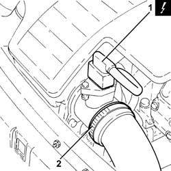
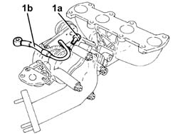
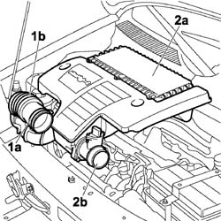
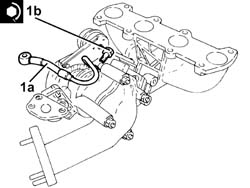
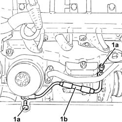
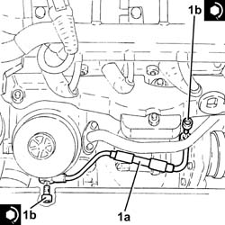

1084B40 engine oil delivery pipe to turbocharger - r + r
- Path
- Procedures > 10 ENGINE > 1084 ENGINE LUBRICATION > 1084B ENGINE OIL LUBRICATION CIRCUIT > 1084B40 engine oil delivery pipe to turbocharger - r + r
- Kind
- repair procedure (removal / refitting; the operation number is the code)
- Applies to
- all engines; all production periods
- Interactive page
- https://sloeber94.github.io/elrnDB-fDbl/en/#/2584434
Applies to: all engines; all production periods
 Removing
Removing
 Refitting
RefittingMake sure that the ignition key is in the OFF position; then disconnect the battery negative terminal.
 | Name | Connector |
|---|---|---|
- | Battery | A1H |
1. Disconnect the electrical connection from the air flow meter.
| Name | Connector |
|---|---|---|
1 | Air flow meter | K41 |
2. Loosen the band and disconnect the the turbocharger air inlet sleeve from the rigid pipe, air flow meter side.

Applies to: all engines; all production periods
Removing
RefittingPosition the vehicle on the ramp.
Proceed with the removal 1072C44 exhaust manifold heat shield on bulkhead - r+r .
Proceed with the removal 7055B54 under-engine guard - r r .
Proceed with the removal 1064A19 TURBOCHARGER - EXHAUST MANIFOLD - EXHAUST PIPE CONNECTING HOSE - R.R. .
Place the power unit in a vice.
1. Undo the connector (1a) and remove the engine oil supply pipe to the turbocharger (1b).

Applies to: all engines; all production periods
1. Loosen the band (1a) and disconnect flexible hose (1b) from the air intake.
2. Remove the air filter (1a) complete with air flow meter (1b) by releasing from the underlying pins and then from the rear fastenings.

Applies to: all engines; all production periods
Refitting
Removing1. Connect the engine oil supply pipe to the turbocharger (1a) and secure by tightening the connector (1b) to the recommended torque.
 | Fastening | Component | Ø | Value (daNm) |
|---|---|---|---|---|
1b | Connector | OIL DELIVERY PIPE TO TURBO | M10 | (Turbocharger side) 1.4 ÷ 1.7 |

Applies to: all engines; all production periods
1. Undo the connectors (1a) and remove the engine oil supply pipe to the turbocharger (1b).

Applies to: all engines; all production periods
Proceed with the refitting 1064A19 TURBOCHARGER - EXHAUST MANIFOLD - EXHAUST PIPE CONNECTING HOSE - R.R. .
Proceed with the refitting 7055B54 under-engine guard - r r .
Proceed with the refitting 1072C44 exhaust manifold heat shield on bulkhead - r+r .
Position the vehicle on the ramp.
Applies to: all engines; all production periods
Refitting
Removing1. Connect the engine oil supply pipe to the turbocharger (1a) and secure by tightening the connectors (1b) to the recommended torque.
| Fastening | Component | Ø | Value (daNm) |
|---|---|---|---|---|
1b | Connector | OIL DELIVERY PIPE TO TURBO | M10 | (Turbocharger side/engine oil heat exchanger) 1.1 ÷ 1.3 |

Applies to: all engines; all production periods
Position the air cleaner with air flow meter. Secure to the rear fastening and then to the underlying pins.
Connect the flexible sleeve to the beam and tighten the retaining band.
Connect the air intake sleeve to the turbocharger, air flow meter side, and tighten the band.
Connect the electrical connection to the air flow meter.
| Name | Connector |
|---|---|---|
- | Air flow meter | K41 |
Connect the battery negative terminal.
| Name | Connector |
|---|---|---|
- | Battery | A1H |